Породи:
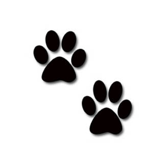Немска овчарка
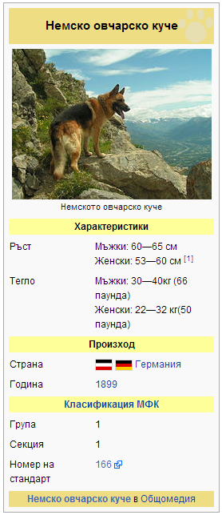
Външен вид
Характеризира се със здрава костна система и добре развита мускулатура. Телосложението е хармонично и съразмерно развито, като тялото е здраво, стегнато, с плътно прилепнала към него козина. Главата е масивна, с клиновидна форма, широка черепна част и плоско чело. Носната гъба е голяма и черна. Челюстите са здрави и силни, с ножицовидна захапка. Ушите са високо поставени, с остри върхове, стърчащи нагоре и се изправят дори до седмия месец. Очите са тъмни и изразителни. Шията е под ъгъл 45° спрямо гръдния кош, който е овален, широк и дълбок. Коремът е умерено прибран. Крупата се спуска плавно към основата на опашката, която е окосмена, със саблевидна форма и на дължина достига под скакателните стани. Крайниците са прави и успоредно поставени, осигуряващи широка крачка с пълно разгъване на ставите. Нормалното движение е нисък приземен тръс. Космената покривка е средно дълга, гъста, груба, с плътно прилягащи косми, които на главата, ушите и предните страни на краката са по-къси, Окраската е сиво-кафеникава с различни оттенъци, гърбът е черен. Предпочитат се наситените тонове. Косъмът е светъл в основата и по-тъмен към върха.вис. холка: мъжки 60-65 см, женска 55-60 см; тегло: мъжки 30- 40 кг, женска 22-32 кг.Характеристика
Немската овчарка (Немско овчарско куче) е най-известната порода кучета, синоним на вярност към стопанина и семейството. Кучетата от породата са предпочитани за охрана на държавните граници, безценни помощници на органите на реда и незаменими пазители на семейното имущество. Създатели на породата са Артур Майер и Макс фон Щефаниц. Средната тежина на немските овчарки е 35 kg, но за целите на граничната полиция и служба „Полиция“ се използват екземпляри със значително по-големи размери.Особености на характера
Кучетата от тази порода са известни със своята привързаност и жертвоготовност за семейството, което се грижи за тях. Те защитават стопаните си с риск за собствения си живот, като същевременно са дисциплинирани, умни, игриви, недоверчиви към непознати хора, издръжливи на пътуване, безсъние и натоварване. Парадоксално е, че немските овчарки не нападат деца. Враждебни са предимно към непознати хора. За целите на националната сигурност немската овчарка е незаменима заради силно развитото си обоняние, посредством което намира без усилие наркотици, някои боеприпаси и пресни следи при издирване на престъпници. Кучетата от породата са търпеливи, приспособими и излъчват самоувереност и самочувствие. Имат бърз бяг в тръс и удължена крачка без съществено поклащане на гръбната линия. Имат сангвиничен тип нервна система - силен и уравновесен, при някои - до холеричен - силен, но неуравновесен, без неуравновесеността да се отнася към сигурността на стопаните. Кучетата от породата имат характер, което особено силно ги обвързва с човешкото семейство.Немската овчарка обединява най-добрите качества на всички породи кучета. Тя е вярно, много жизнено и издръжливо куче, с развит интелект, неподкупно, недоверчиво към непознати хора, бдително, смело и чудесен приятел, готово да защити своя господар с цената на живота си. Има добре развит отбранителен рефлекс. Изключително силното обоняние и отличният слух, вроденото чувство за борба и търпеливостта й я правят незаменим помощник на полицаите, граничарите, митничарите, както и на армията. Тя е незаменим водач на слепи хора, спасител на затрупани от лавина или след земетресение, както и рудотърсач, газопроверител и др. В някои страни все още се използва за пазене на овчи стада. Немската овчарка е изключително чисто животно, поради което се отглежда в апартаменти въпреки големите си размери и е безупречен бодигард. Уравновесената й нервна система, привързаността и безкористната й любов я правят желан обитател на всеки дом.Лабрадор ритривър
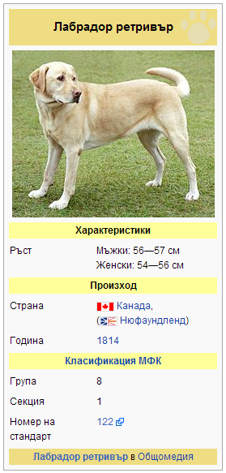
История на породата
Модерните Лабрадори възникнали в провинция Нюфаундленд и Лабрадор , Канада. Породата основаването на Лабрадорът беше вода куче кантарион , порода, която се появи през ад- хок кръстоска от ранните заселници на острова през 16-ти век. предците на Dog кантарион не са известни, но вероятно са били случаен порода смесица от английски, ирландски, португалски и работни породи. Нюфаундленд (известен тогава като Greater Нюфаундландът ) е вероятно в резултат на Куче за разплод кантарион с мастифи доведени до острова от поколенията на португалските рибари, които са били , извършващи риболов в открито море от 16-ти век. По-малкият късокосместо кантарион куче (също известен тогава като Lesser Нюфаундландът ) се използва за извличане и дърпа в мрежите от водата . Тези по-малки кучета са били предците на Лабрадор ретривър . Белият гърдите, краката, брадичката , и муцуната - известен като смокинг маркировки - характеристика на Dog кантарион често се появяват в съвременните Лабораторни смеси, и от време на време ще се прояви в лабрадори като малко бяло петно на гърдите (известен като медальон ) или заблудени бели косми по краката или муцуната. Площ от Нюфаундленд Св. Йоан бе договорена предимно от англичаните и ирландците . Местните рибари първоначално използвани куче кантарион да окажат съдействие при извършване въжета между лодки , теглене Лодки , и помага да извлечете мрежести чорапогащници във водата. Лоялност Лабрадорът и трудолюбиви поведение са ценни активи за рибарите. А броят на Св. Йоан Кучетата са били върнати до района Poole на Англия в началото на 19 век, тогава център на риболова търговията на Нюфаундленд , от дворяните , и стана ценени като спортни и водоплаващи ловни кучета. няколко развъдници , отглеждащи тези израснал в Англия , като в същото време комбинация от политиката за защита на овце ( Нюфаундленд ) и карантина бяс (Англия ) доведоха до постепенно тяхната смърт в страната им на произход. Първата и втората графовете Malmesbury , които развъждат за патица стрелба на имението си, и на 5-ти и 6-ти херцозите на Buccleuch , и най-малкият син лорд Джордж Уилям Montagu - Douglas -Scott, са били важен инструмент при разработването и създаване модерната Лабрадор порода през 19 век в Англия . Кучетата Avon ( " Buccleuch Avon " ) и Нед , дадени от Malmesbury да съдейства на херцога на програма за развъждане Buccleuch през 1880-те се считат за предците на съвременните лабрадори. Първото куче кантарион се казва, да бъдат доведени до Англия през или около 1820 , но репутацията на породата се е разпространил в Англия дълго преди . Има една история , че графът на Malmesbury видях кучето кантарион на рибарска лодка и веднага се уговорила с търговците да имате някои от тези кучета , изнесени в Англия. Тези предци на първите лабрадори толкова впечатлени граф с техните умения и способност за извличане на нещо в рамките на водата и на брега , че той посвещава целия си развъдник за развитието и стабилизирането на породата.Характер
Отличават се с добър нрав. Големи любители на плуването във вода. Лесно приспособими. Интелигентни, проницателни и без следа от агресия или прекалена боязливост. Лесно се дресират и приспособяват към всякакъв вид семейства, стига да получават необходимата разходка - поне 2-3 часа на ден.Външност
Лабрадори са сравнително големи , с мъжките обикновено с тегло 29-41 кг ( 64-90 фунта) и жени от 25 до 32 кг ( 55-71 фунта) . Лабрадори с тегло близо до или над 100 (45 кг ) , се считат с наднормено тегло или като основна вина под стандартите American Kennel Club , въпреки че някои лабрадори тежат значително повече. По-голямата част от характеристиките на тази порода , с изключение на цвят , са резултат от разплод да произвежда работа ретривър. Както и при някои други породи , конформацията (обикновено " English ", " шоу" или " пейка " ) и областта (обикновено "американски" или " работа " ) линии се различават , въпреки че и двете линии са отгледани в двете страни. Като цяло , обаче , конформация Лабрадорите са склонни да бъдат развъждани като средни кучета , по-кратки и по-набит с пълни лица и малко по -спокоен характер , отколкото техните колеги Опита , които често се отглеждат като по-високи , по-леки рамки кучета , с малко по- широки лица и малко по-дълъг нос , но Опита лабрадори все още трябва да бъдат пропорционални и да се поберат в рамките на AKC стандарти. С полеви лабрадори , прекомерно дълги носове, тънки глави, дълги крака и върлина рамки не се считат за стандарт. Тези два вида са неофициални и не кодифицирани или стандартизирани ; не се прави разграничение от AKC или други киноложки клубове , но двата вида са от различни развъдни линии. Австралийската фондова също съществува , макар че не се вижда на запад, те са често срещани в Азия. Тези кучета са много добри с деца. Породата има тенденция да се хвърли косата два пъти годишно , или регулярно през годината, в умерен климат Някои лабрадори хвърлят значително. На лабрадорa коса обикновено е доста къса и права, а опашката доста широка. На ципести пръстите на Лабрадор ретривър ги отлични плувци правят . Лентата между пръстите на краката им също може да служи като " снегоходки " в студен климат и запази сняг от балиращи между пръстите на краката им - състояние, което може да бъде болезнено за други породи с косми между пръстите на краката . Тяхната преплетени палто е също сравнително водоустойчива , предоставяйки по-голяма помощ за плуване. Има голяма доза разнообразие сред лабрадорите . Следните характеристики са типични за строеж показват развъждат ( пейка порода ) линии от тази порода в Съединените щати , и се основават на стандарта AKC. са отбелязани значителни разлики между Великобритания и американските стандарти . Размер: лабрадори са относително голяма порода. Те би трябвало да бъде толкова дълго, от холката до основата на опашката , тъй като те са от пода до холката . Мъжете трябва да стоят 22.5 до 24.5 инча ( 57-62 см) височина при холката и тегло 65 до 80 lb (29 до 36 кг ) . Женските трябва да стоят 21.5 до 23.5 инча ( 55-60 см) и тежи 55-70 lb ( от 25 до 32 кг). За сравнение според стандартите на Великобритания Kennel Club , височина трябва да бъде 22 до 22.5 инча ( 56-57 см) за мъжете и 21.5 до 22 инча ( 55-56 см) за жените. Герб : Герб на лабораторията трябва да бъде кратък и плътен , но не жилав . Козината е описан като " водоустойчив " или по-точно " водоотблъскващ ", така че кучето не е студено , когато приемате с вода през зимата. Това означава, че кучето естествено има малко сух , маслен слой . Допустими цветове са черно , жълто (в диапазона от слонова кост или крем за лисица червено) , и шоколад . Глава: Главата трябва да е широк с ясно изразен стоп и леко изразено чело. Очите трябва да са мили и изразителни . Подходящи цветове на очите са кафяви и лешникови . Подплатата около очите трябва да са черни . Ушите трябва да висят в близост до главата и са определени малко над очите. Челюсти : Челюстите трябва да са силни и мощни . Муцуната трябва да бъде със средна дължина , и не трябва да бъде прекалено заострена . Челюстите трябва да висят леко крива и грациозно назад . Тяло: Тялото трябва да бъде силна и мускулеста , с най-горния ред ниво. Опашката и козината са определени отличителни" [ или ] отличителен функции " на Лабрадорът както от Kennel Club и AKC. AKC добавя, че " истинската Лабрадор Ретривър темперамент е толкова отличителен белег на породата , тъй като " видра " опашка ".Бигъл
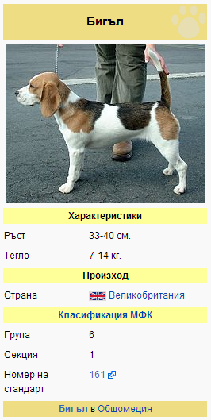
Бигъл или бийгъл (от английското Beagle) е порода средно-големи кучета. Появяват се като ловджийски
кучета в Англия през първата половина на 19 век. Те живеят около 12-14 години. Обонянието им е
силно развито. Ушите им са дълги и кадифено меки. Бигълът е дружелюбен и обича да си играе. Тази
порода произлиза от хрътките.
Поведение, темперамент, външен вид
Весело ловно куче, чиято основна дейност е да ловува, предимно зайци, проследявайки следата. Смело, много енергично, издръжливо и решително. Бдително, интелигентно и умерено темпераментно. Дружелюбно и внимателно, без да показва агресия или страх. Глава: Задоволително дълга, мощна, без да бъде груба, по-елегантна при женските, ненамръщена и без гънки. Черепна област: Череп: Леко купловиден, умерено широк, с лек връх. Стоп: Добре изразен, разделящ дължината между тила и върха на носа, толкова равно, колкото е възможно. Лицева област: Носна гъба: Широка, за предпочитане черна, но по-светла пигментация е допустима при светло оцветени кучета. Широки ноздри. Муцуна: Не е чипа. Устни: Сравнително отпуснати. Челюст и зъби: Челюстите трябва да са здрави, с перфектна, симетрична и пълна ножична захапка, т.е. горните резци трябва плътно да припокриват долните и да са поставени отвесно на челюстите. Очи: Тъмнокафеви или с цвят на лешник, сравнително големи, нито хлътнали, нито изпъкнали, поставени доста отдалечено, с меко, трогателно изражение. Уши: Дълги, със заоблени върхове, стигащи почти до върха на носа, когато се издърпат напред. Ниско поставени, фини по структура и грациозно висящи плътно до бузите. Шия: Достатъчно дълга, за да позволява на кучето лесно да се навежда да души следата, леко извита, леко видима гуша. Тяло: Късо споено, но пропорционално. Горна линия: Права и равна. Поясница: Поясницата е мощна и гъвкава. Гърди: Ниски до под лактите. Ребрата са добре извити и добре разширени отзад. Корем: Без да е прекомерно прибран. Опашка: Здрава, умерено дълга. Високо поставена, носи се "весело", но без извивка над гърба или наклонена напред от основата. Добре окосмена, особено в долната част. Крайници: Преден крайници: Предните крайници са прави и отвесни, добре поставени под тялото, с доста субстанция и заоблени кости, без заострени лапи. Плешки: Добре разлети назад, ненатоварени. Лакти: Стегнати, без да са обърнати нито навътре, нито навън. Височината до лакътя е около половината от височина при холката. Метакарпус: Къс. Предни лапи: Стегнати и твърди. Добре вложени и добре подплатени. Не са заешки тип. Къси нокти. Задни крайници: Бедра: Замускулени. Колене: Добре сгънати. Скакателни стави: Стегнати, доста ниски и паралелни една на друга. Задни лапи: Стегнати и твърди, добри стави на пръстите и здрави възглавнички. Не са заешки тип. Къси нокти. Походка и движение: С устойчива задница, стегната без индикации на клатушкане. Свободни крачки, дълъг и прав разкрач напред, без подскоци; задните крайници са двигателните. Походката не трябва да е нито стегната отзад, нито загребваща, нито плитка отпред. Козина: Косъм: Къс, гъст и водоустойчив. Цвят: Трицветно (черно, жълтокафяво и бяло); синьо, бяло и жълтокафяво; язовича окраска; заешка окраска; лимонено и бяло; червено и бяло; жълтокафяво и бяло; черно и бяло; чисто бяло; С изключение на чисто бялото, всички изброени по-горе цветове могат да бъдат на петна. Никакви други цветове не са допустими. Върхът на опашката е бял. Размери: Желателна минимална височина при холката 33 cm. Желателна максимална височина при холката 40 cm. Недостатъци: Всяко отклонение от гореизложените параметри трябва да се разглежда като недостатьк, сериозността на който се оценява според неговата степен и ефакта му върху здравето и благосъстоянието на кучето и способността му да изпълнява традиционните си работни задължения. Дисквалифициращи недостатъци: - Агресия или прекомерен страх; - Всяко куче, ясно показващо физически или поведенчески аномалии ще бъде дисквалифицирано. Забележка: Мъжките екземпляри трябва да имат два нормално развити тестиса, напълно спуснати в скротума.Хъски
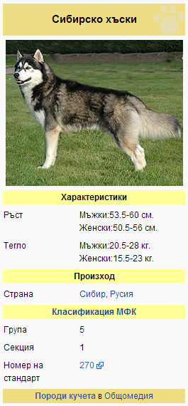
Сибирското хъски е порода куче, която произлиза от източната част на Сибир. Сибирските хъскита
са първоначално селектирани от чукчите в североизточна Азия, по-късно внесени от търговци в Аляска,
САЩ и Канада. Породата попада в категорията Шпицове и примитивни. Физическата им сила и издръжливост
на студ ги прави много добри кучета-водачи на впрягове. Обичат тичането, което всъщност им е нужно,
за да разтягат своите мускули и им трябва доста да се разхождат ако живеят в апартамент.
Характер
Хъскито е лоялен семеен компаньон. Не е подозрителен към непознати, но ще пази дома ви от тях. Нежен, предан и бдителен. Нетърпелив да учи.Външен вид
Очите са във всички нюанси на синьото - едноцветни или пъстри. Триъгълни уши, разположени близо едно до друго. Тялото е малко по-дълго, отколкото високо.Подобно на унгарската визла няма кучешка миризма. Козината може да бъде дълга или къса,но при двата вида подръжката (груминга) не е особено труден. Подкосъмът е мек. Позволени са най-различни цветове.Очни заболявания
Има три предавани по наследство заболявания: наследствена/младежка катаракта, корнеална дистрофия и прогресивна ретинална атрофия. Наследствена младежка катаракта: Наследствената младежка катаракта се изразява с помътняване на очите на младото куче още на около 3 месечна възраст. Тези катаракти се различават от не-наследствените, които засягат възрастни или остарели кучета. Катарактата води до отслабване на зрението или пълна слепота в някои случаи. Най-често срещаната при сибирското хъски се наблюдава в задния дял на лещата. Корнеална Дистрофия: Корнеалната дистрофия засяга корнеята - външния прозрачен участък на очната ябълка. В повечето случаи при "Сибирците" заедно с това заболяване има ненормално събиране на липиди в чистата корнея на окото, което води до замъгляване или непрозрачност. Сибирското хъски има склонност към дълбока стромална дистрофия, която включва натрупване на триглицериди. Наблюдава се също ануларна дистрофия във формата на поничковидно замъгляване в периферната корнея. Обикновено се забелязва при възрастни кучета и засяга по-често женските. Зрението рядко се засяга и не съществува ефективно лечение. Прогресивна Ретинална Атрофия (ПРА): Прогресивната ретинална дистрофия засяга ретината, светлочувствителната вътрешна "подплата" на задната част на очната ябълка. Сибирските хъскита страдат от уникална форма на ПРА, която се наблюдава само при тази порода и човека. Предизвиква загуба на нощното зрение, следвана от загуба на дневното зрение и евентуално слепота. Нарича се Х-linked PRA, тъй като се предава чрез ХХ хромозома на женската. Женски, които наследят дефектен ген от един родител и нормален от другия, не се разболяват сериозно. Те са носители с много слабо забележими ретинални дефекти и не губят зрението си. Мъжко кученце от женска-носител получава или дефектен, или нормален ген, зависи от това коят хромозома му се падне. Ако е с дефектен ген, кучето е засегнато от ПРА, тъй като мъжките носят хромозом ХY. Заболяването при мъжките води до загуба на зрението на възраст още дори около 5 месеца. Тазобедрена дисплазия Тазобедрената дисплазия представлява увреждане на тазобедрената става, при което бедрената кост не приляга добре в гнездото на ставата. Болестта по принцип се развива през първите две години от живота на кучето, като - в зависимост от степента на тежест - води до силни болки, прогресивно окуцяване, възпаление или артрит на засегнатата става. Заболяването засяга кучета и от двата пола, може да се прояви само на едната тазобедрена става или и на двете. Наследственият механизъм е "полигенен", т.е. за проявяването на заболяването са виновни няколко "болни" гена, а в резултат на това е напълно възможно от здрави родители, които са носители на част от гените, да се роди болно поколение. Отделни фактори от околната среда - например прекомерно калорично хранене по време на бързата фаза на растеж на кученцето - могат да доведат до утежняване на вече налична дисплазия.Изследването за тазобедрена дисплазия се извършва посредством рентгенови снимки на тазовата област (кучето се поставя да легне по гръб и задните крайници се наместват в съответна позиция, която най-добре разкрива ставите).Изследване за дисплазия може да бъде направено най-рано на 18-месечна възраст, желателно е кучето да има навършени пълни 2 години.Доберман
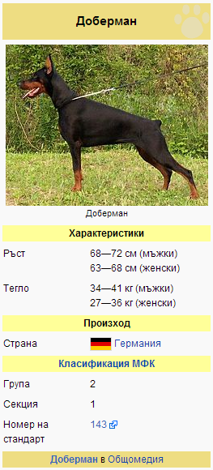
Добермана (доберман пинчер) е порода куче, създадена в Тюрингия, Германия в края на XIX век.
Оригиналното име на породата е тюрингски пинчер, но след смъртта на своя създател Фридрих
Луис Доберман през 1894 година, е заменено на доберман пинчер. След 1949 година е премахната
думата пинчер, и се казва Доберман.
Характеристики
Външен вид
Високо, стройно и хармонично свързано куче с квадратен формат. Елегантните линии на тялото му, гордата стойка и незаменимият характер го правят незаменим компанион и самоотвержен защитник, ако се наложи.Размер
Размери според FCI Ръст мъжки - 65-70 см., ръст женски -63-67см. тегло - 20-26кг. Размери според AKC Ръст мъжки - 66-71 см., ръст женски -61-66см. Размери според KC (The Kennel club) мъжки идеално 69см. женски идеално 65см.Цвят
Черен, кафяв и син с ръждиво-червени петна. Типичният черен цвят с кафеви муцуна, лапи и в частност корем, се нарича плащ с подплащници.Глава
Пропорционална на тялото.Черепната част, погледната отгоре, има клиновидна форма, не е много широка между ушите и почти плоска, като към темето има леко заобляне. Медианната бразда е забележима. Надочните дъги не са много развити. Стопът е плавен, но очевиден. Муцуната е пропорционална на черепната част и добре развита. Отворът на устата трябва да стига до кътните зъби. Устните са месести и плътни, прилепнали към долната челюст, осигурявайки перфектно затваряне на устата, пигментирани са тъмно.Нрав
Доберманът е единствената порода куче, чиято насоченост е да бъде телохранител на своя стопанин. Интелигентен, лесно податлив на обучение, силен и ловък той живее с желанието да служи на човека. Пълен с енергия, весел и общителен той създава здрава връзка със своето човешко семейство и особено с “избрания” човек, който остава единствен за него за цял живот. Доберманът съществува за да бъде до стопанина си, да се грижи за него и да пази неговия живот. Недоверчив е към други хора.Интелект
По интелигентност доберманът се намира в първа група на пета позиция. Това означава, че за заучаване на дадена команда са необходими по-малко от пет повторения. Пред него се нареждат, както следва : 4.Голдън Ретривър, 3.Немска Овчарка, 2.Пудел 1.Бордърколи. Несъмнено изключително умно и расъдливо животно.Враждебност
Темпераментен, но овладян и дружелюбен. Приятелски настроен към деца, но непоколебим и ефикасен срещу всеки натрапник.Бордър коли
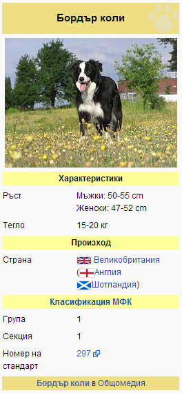
Бордър коли е порода кучета с произход Великобритания. Съвсем наскоро канадски учени от
Университета на Британска Колумбия стигнаха до заключението, че Бордър колито е най-интелигентното
от всички породи кучета.
История на породата
Още около 800 г.(след н.е.), при завръщането по домовете си след сражения срещу британците, викингите взимали със себе си овчарски кучета. Първото описание на работата на днешното Бордър Коли е от Джон Кай, личен лекар на кралица Елизабет 1, записани в книгата "Трактат за английски догове" от 1570 г. Първите сведения за работещи овчарски кучета са от Италия, от малко преди раждането на Христос, след като римляните нахлуват във Великобритания и са взели доста от тези кучета в Италия. За прародител на днешните Бордър Коли се счита Old Hemp (1893), собственост на фермера Адам Телфер. Това куче привлекло с необичайните си охранителни умения, което го нарежда сред най-значимите за разплод породи. През 1881 г. е разработен стандарта на породата. Името “Бордър Коли” е дадено през 1915 г. от Д. Рийд, който по-късно става секретар на Международната асоциация за овчарски кучета. Названието “Бордър” е прибавено, защото най-добре работещите кучета са от граничния район между Южна Шотландия и Северна Англия.Стандарт на породата
Общ вид
Бордър колито е умно, изпълнено с безкрайна енергия куче. От самото си селектиране до днес кучетата от тази породата не губят своята популярност и продължават да бъдат предпочитани от фермерите. Лесната им приспособимост и изключителна интелигентност ги правят незаменими помощници на скотовъдите. Работните им качества са се доказали през годините.Характер
Бордър колито е куче с добър нрав. Изключително лоялно към стопанина си. Поддава се лесно на дресировка, старае се да угажда всячески на своя господар. Необходими за правилното му развитие са редовни умствени и физически тренировки. Отнася се дружелюбно към децата. Разбира се добре с другите животни от стопанството.Предназначение на породата
Бордър колито се числи към породите овчарски кучета. И до днес то си остава най-предпочитано от тази група. Лесната податливост на дресировка и неизчерпаемата енергия са основните причини за този факт. При правилна дресура бордър колитата могат отлично да координират стада с овце или друг добитък. Кучетата могат да бъдат научени на следните команди:- "Гони"-Подкарват (подгонват) към стадото изостаналите животни
- "Търси"-Издирват загубилите се животни
- "Пази"-Не допускат навлизане на стадото в забранени за паша места
- "В кръг"(или "Кръгом")-Сгъстяване и спиране на стадото
Глава
Черепът е умерено издължен. Муцуната е крепка, умерено широка. Цветът на носа е черен, кафяв или тъмно сив, в зависимост от цвета на козината.Шия
Вратът е дълъг и здрав, с добре развита мускулатура.Уши
Ушите са със среден размер, висящи или наострени в зависимост от ситуацията.Очи
Цветът на очите варира от тъмнокафяв до кехлибарен или син. При някои разцветки нерядко двете очи са с различен цвят.Торс
Туловището е донякъде издължено и мускулесто. Гръдният кош е широк.Козина
Съществуват доста варианти на окраска, но най-често срещаната е черно-бялата. Други варианти са черна трицветна (черно/светлокафяво/бяло), червено-бяла (шоколадово-бяла), червена трицветна (червено/светлокафяво/бяло), също така се срещат и други цветове като синьо или "Австралийско червено" (златисто). Бордър колитата могат и да са едноцветни.Ротвайлер
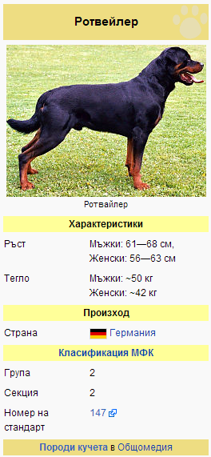
Ротвайлер е порода куче. Няма точна информация за родината на ротвайлера, според някои източници
произходът му датира още от Римската империя. Използван е като домашно и овчарско куче. Според
други родината му е Германия. По време на Първата и Втората световни войни е използван като
стражево куче. Да, те изглеждат плашещи, дори злобни, но всяко куче е различно, със своя
индивидуалност и всичко е въпрос на обучение! Ротвайлерът е отличен пазач и бодигард и ако бъде
обучен навреме и правилно би бил Ваш верен спътник.
Външен вид
В спокойно, неподвижно състояние набитата му фигура излъчва сила, ловкост и издръжливост. Средно едро, масивно куче, което се отличава със средно голяма глава, силно изразен стоп.Носна гъба
Черно оцветени носна гъба и устни.Зъби
Ножицовидна захапка на челюстите, силни и в пълен брой 42 зъба. Захапката му е най - силна сред другите кучета.Очи
Тъмнокафяви, средно големи, бадемовидни очи.Уши
Малки, високо поставени висящи уши. Има мощна, здрава шия.Крайниците
Са прави и успоредно поставени, масивни, с релефна, силно развита мускулатура. Лапите са големи и овални, със здрави, сводести пръсти.Опашка
В спокойно състояние права, естествено висяща, нито високо, нито ниско поставена. Същата не се купира, съгласно забрана в Закона за защита на животните.Космена покривка
Космената покривка е къса и гъста, съставена от груби, плътно прилягащи косми. Кожата е дебела, но еластична. При отглеждане на кучето при ниски температури се развива плътно подкосмие, предпазващо от влага и студ. Окраската е черна, с червено-кафяви, рязко отграничени рисунъци (по краката, предната част на шията и гърдите, долната част на муцуната и над веждите и по крайниците).Характеристика
Появата му издава самобитност, поведението му е самоуверено и смело, ротвайлерът има много стабилна, уравновесена нервна система, не се бои от по-едри противници, влиза в единоборство и се бори с настървение. Има здрава захапка и силен боен дух. Използва се като полицейско куче и като надежден и предан домашен пазач. Ротвайлерите са забранени в някои американски щати и европейски страни.Бернски зененхунд
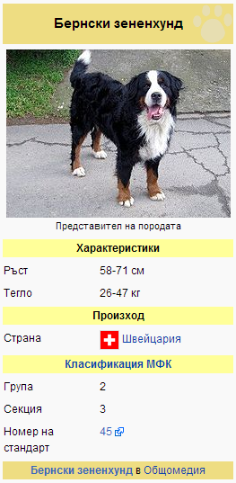
Бернският зененхунд (на немски: Berner Sennenhund), наричан понякога бернско планинско куче, е
порода кучета, произхождаща от Швейцария. Историята ѝ датира от над 2 000 години. Селектирана
е в района на днешния град Берн, откъдето идва и нейното име. Днес като туристическа атракция в
някои швейцарски градове представители на породата теглят леки каручки, изпъстрени с цветя.
История
Според изследванията породата е получена от кръстосването на римските молоси с местни овчарски кучета преди около 2 000 години. Породата е използвана главно за паша и охраняване на стадата добитък. В миналото тя е наричана "дюрбехлер" по името на малкия град Дюрбах, където са създадени трицветните екземпляри. Използвани са много през Средновековието, но в началото на 19 век почти изчезват. След това, в началото на 20 век няколко ентусиасти започват да показват представителите на породата по киноложки представления в Берн и през 1907 е основан първия клуб за бернски зененхунди, наречен „Schweizerische Dürrbach-Klub“, който същата година написва първия стандарт на породата. Към 1910 са регистрирани 107 представители на породата. През 1949 бил направен експеримент, включващ кръстосване на бернски зененхунд с нюфаундленд, а през 1990 е добавена кръв на лабрадор ретривър, но резултатите все още не са ясни.Външен вид
Бернският зененхунд е сравнително голям и със силна структура на тялото, будно изражение и внушителна външност. Тежи между 26 и 67 кг и е висок 58-71 см. Козината му е мека и лъсава, гъста и средно дълга, като може да бъде права или чуплива. Тя е в черен цвят, но обикновено се срещат бели части по лицето, гръдния кош и лапите, както и червени около очите. Бялата част на гръдния кош понякога е наричана "швейцарски кръст", защото наподобява швейцарското знаме.Темперамент
По характер бернският зененхунд е предан, мил и общителен, което го прави добър домашен любимец като за хора с опит в отглеждането на кучета, така и за такива без. Интелигентен е и се поддава лесно на дресировка. Кучетата от тази порода са спокойни, уравновесени и чувствителни. Понякога мъжките еземпляри се държат надменно и господстващо, докато женските се привързват към един от членовете на семейството и му се подчиняват. Бернските зененхунди се разбират добре с деца и са щастливи, когато те им обръщат внимание. Въпреки това, те са големи кучета и по невнимание могат да наранят по-малките деца. Отношението на зененхунда към хората е различно според самия екземпляр - някои са много резервирани и стоят настрани, а други са приятелски настроени. Разбират се добре с други домашни любимци и затова са подходящи за такива семейства. По-възрастните представители трудно се адаптиат в нов дом. Чувстват се добре в студено време и не обичат жегите.Самоед
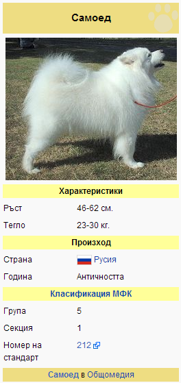
Самоед (на руски: Самоедская собака) е порода кучета, принадлежащи към типа шпиц. Техният произход датира
от преди 3000 години, от земите на днешен Сибир, по-точно Урало-Ненецката област. Били открити и внесени
в Англия от Ърнест Скот и използвани в много полярни експедиции от Роалд Амундсен, Фритьоф Нансен, дук
Абруци Луиджи Савойски и други. Самоедът е типично впрегатно куче, с мощен гръб и лапи, издържливо на
големи преходи. В миналото те се използвали като впрегатни кучета, както и за лов и охрана на стадата.
Притежават спокоен темперамент, включващ липса на агресивност и позитивно настроение. Цветът им е бял, с
гъст косъм и твърд подкосъм. Първият стандарт на породата е приет в Англия през 1909. По-късно той
претърпява леки изменения. Средната продължителност на живота на кучетата от тази порода е около 11 години.
Размер
Мъжките обикновено тежат между 23-30kg, при височина 60-70 cm, докато женските са приблизително 20-26 kg, при височина 50-60 cm.Очи
Очите биват обикновено тъмно кафяви, с бадемовидна форма. Син, светлокафяв или жълт цвят се смятат за сериозен породен недостатък.Уши
Ушите са малки, заоблени, покрити с козина, триъгълна форма. Могат да имат светло бежово оцветяване.Космена покривка
Породата се отличава с дълга козина, с гъст подкосъм. Цветът обикновено е бял, със сребристи оттенъци. Интересна характеристика на самоеда е, че козината има уникалното свойство да се "самопочиства" и да запазва белия си цвят. Козината на малките кучета е по-гъста и мека. Нуждаят се от ежедневно разресване и специална козметика за поддръжка.Характер и породен темперамент
Самоедите са дружелюбна порода, което ги превръща в лоши пазачи. Те притежават шумен и жив темперамент. Добра компания са за деца и други кучета. Не са ревниви, но силно се привързват към един от членовете на семейството и са склонни да проявят доминантност спрямо други домашни любимци. Не обичат самотата, а ако се почувстват изолирани, лаят и вият. Обучават се сравнително лесно и ако обучението е превърнато в игра, то не ги отегчава.Померан
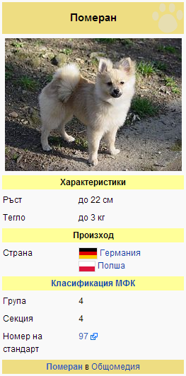
Померан (на немски: Zwergspitz, на полски: Szpic miniaturowy), наричан още той шпиц е порода кучета,
произхождаща от областта Померания, обхващаща североизточната част на Германия и северната част на
Полша. Принадлежи към групата на декоративните кучета поради малкия си размер. Според стандарта на
Международната федерация по кинология померанът е най-малката разновидност на немския шпиц.